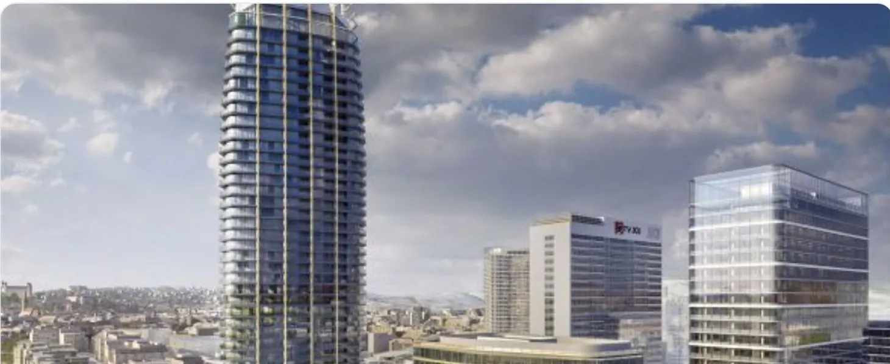

Every home begins as a piece of land — a blank canvas filled with possibility. A plot measured in square feet, defined by boundaries, and imagined through drawings.
But for a homeowner, it is never just land. It represents years of savings, long‑term aspirations, and a deeply personal vision of life ahead.
The journey from land to a completed home is not just a construction process — it is a transformation of financial investment into emotional security.
And at the center of this transformation lies one critical factor: trust.
Why Trust is the Real Foundation of Construction
Most people believe that the strength of a home lies in concrete, steel, and materials. While these are essential, they are not the true foundation.
The real foundation is trust in execution.
Because construction is a process filled with uncertainty:
- Will the structure be built as per design intent?
- Will materials meet quality standards?
- Will timelines be respected?
- Will costs remain under control?
Without trust, every stage becomes a question mark. With trust, the entire journey becomes predictable.
This is why at Saansud Infra, trust is not treated as a byproduct — it is designed into the system from the very beginning.
Trust is Built Through Repeatable Systems
Trust is not built through promises. It is built through repeatable systems.
1. Transparent Costing
A project without cost clarity creates uncertainty from day one. At Saansud Infra, every element — scope, inclusions, exclusions, and milestones — is defined before execution begins. This ensures the homeowners are not surprised by hidden costs.
2. Quality Assurance Systems
Quality is not a final inspection — it is a continuous process. Each stage undergoes checks to ensure materials and workmanship meet defined standards.
3. Execution Ownership
Fragmentation is the biggest risk in construction. When multiple vendors operate independently, accountability gets diluted. A centralized execution model ensures that one team owns the entire process.
4. Long‑Term Reliability
A home is not judged on completion day — it is judged years later. Structural decisions, material selection, and execution quality are aligned for long‑term performance.
How Process Eliminates Uncertainty
Confidence is not built through words. It is built through consistent delivery behavior across stages.
- Pre‑Construction Phase: This is where clarity is established. Design alignment, budgeting, and technical planning ensure that execution starts with a strong foundation.
- Execution Phase: Work progresses through defined milestones. Sequencing is controlled, materials are tracked, and quality checks are enforced.
- Finishing & Handover: Every detail is reviewed. Snags are resolved, and the home is prepared for delivery with precision.
- Post‑Handover Support: Support continues even after completion, ensuring long‑term satisfaction and trust.

From Land to Landmark: Beyond Just Construction
Anyone can construct a building. But not every building becomes a landmark.
A landmark is not defined by luxury or scale. It is defined by how well it performs over time.
A true landmark home:
- Maintains structural integrity over decades
- Adapts to the evolving needs of its residents
- Retains aesthetic value despite changing trends
- Requires minimal corrective maintenance
These outcomes are not achieved through shortcuts. They are achieved through disciplined execution and accountable systems.

Transaction vs Partnership
Vendor Transaction
- Focus on lowest upfront cost
- Limited long‑term accountability
- Disconnected teams and communication gaps
- No standardized quality benchmarks
- Reactive issue handling
Saansud Partnership
- Focus on lifecycle value
- End‑to‑end accountability
- Integrated execution system
- Defined and monitored quality standards
- Proactive planning and execution
A home is not just built once. It is experienced every single day for years.
That experience depends entirely on how it was built.
The Emotional Dimension of Trust
Beyond engineering and execution, construction is deeply emotional.
It affects how homeowners feel during the process:
- Confidence vs uncertainty
- Clarity vs confusion
- Peace of mind vs constant stress
A structured system does more than build a house — it creates a calm, predictable journey.
Build with Confidence
If you are planning your home, evaluate not just cost — but the system behind the execution.
Explore our Project Portfolio
Visit our Costing & Quote page
Because in the end, trust is not claimed. It is built through process.
Turn Your Land Into a Landmark
Build with a partner that values trust, quality, and long-term performance.
Get a Free Consultation